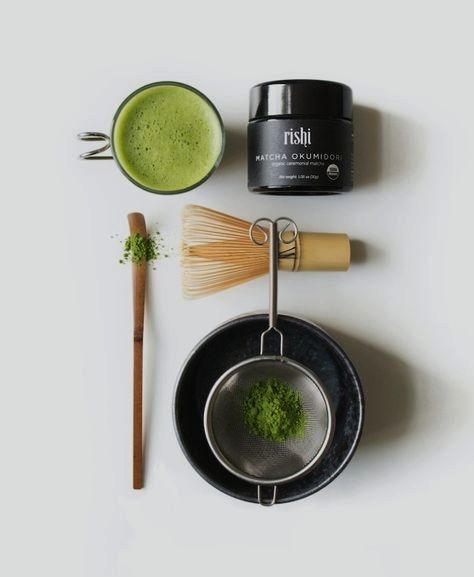

Hello.
Matcha is widely used for cooking and as an ingredient in confectionery.It is delicious even if it is mixed in cakes and cookie dough, and you can add it to flavor chocolate or ice cream.
Ingredient

Recipe
1.5 Cups Almond milk,1.5 Tsp Matcha powder,3 Pitted dates,0.5 Cinnaamon,Water
4 Ways To Make Matcha Latte

Instructions
- Add the almond milk, matcha powder and dates to your blender and combine until smooth. If you have a vitamix, set it to the soup setting and allow it to heat in your blender.
- Alternatively blend your contents then add them to a pot and heat until warm.
- Pour in a glass and top with cinnamon